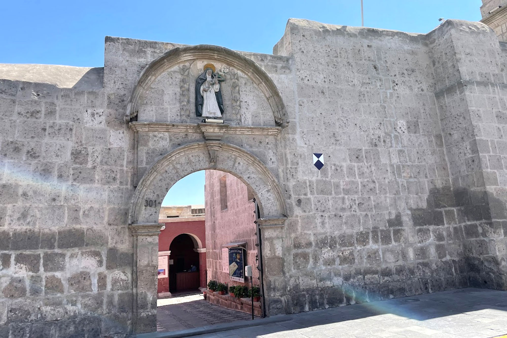
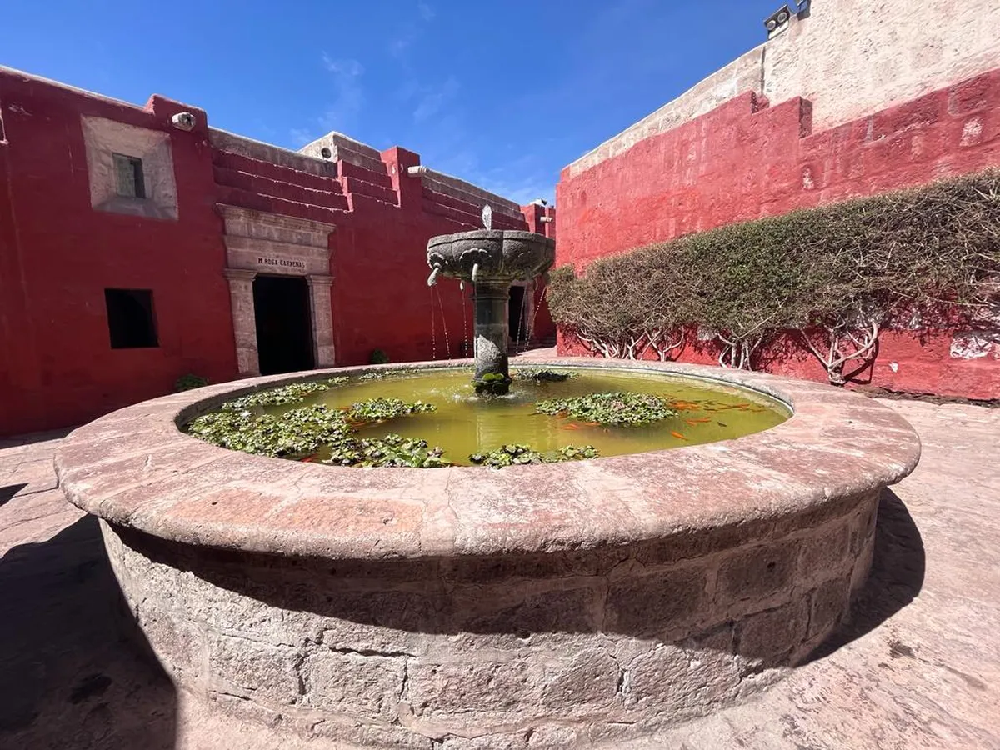
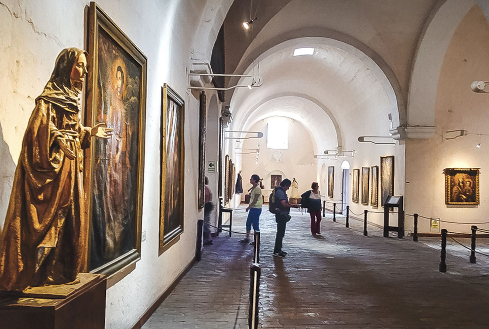
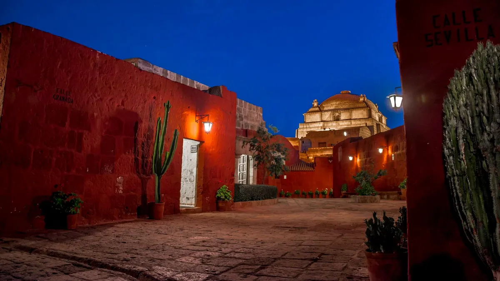

Monasterio de Santa Catalina: Un tesoro colonial en Arequipa
El Monasterio de Santa Catalina es uno de los monumentos religiosos más importantes del Perú. Fundado en 1579, este convento de clausura es una ciudadela dentro de Arequipa, con calles, plazas y edificaciones de sillar que reflejan la vida monástica de la época colonial.
Historia
Desde su fundación, el Monasterio de Santa Catalina ha sido un símbolo de la arquitectura y la espiritualidad en Arequipa. Durante siglos, albergó a monjas de clausura que vivían en un ambiente de aislamiento y oración. Hoy en día, es un museo que permite a los visitantes conocer su historia y recorrer sus coloridas calles y claustros.




Horarios y Ubicación
- Ubicación: Calle Santa Catalina 301, Arequipa, Perú.
- Horarios de visita: Lunes a domingo de 9:00 a.m. a 5:00 p.m.
- Costo de entrada: Aproximadamente S/ 40 para adultos y S/ 20 para estudiantes.
Consejos para Visitantes
- Realiza una visita guiada: Para comprender mejor la historia y los detalles arquitectónicos del monasterio.
- Visita al atardecer: La iluminación resalta la belleza del sillar y crea un ambiente mágico.
- Explora cada rincón: Las calles internas, las celdas y los patios tienen detalles sorprendentes.
- Respeta las normas del lugar: Es un espacio con valor histórico y espiritual.
- No olvides tu cámara: Es uno de los lugares más fotogénicos de Arequipa.